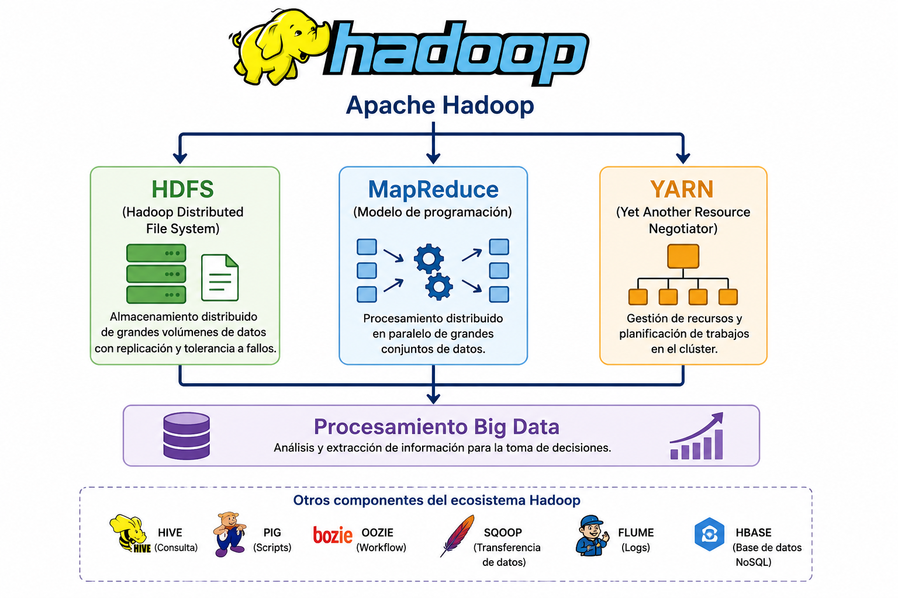

Capítulo 3. Ecosistema de Hadoop
Ecosistema de Hadoop
Ecosistema de Hadoop
El ecosistema Hadoop ha supuesto una revolución en el procesamiento distribuido de grandes volúmenes de datos, permitiendo que organizaciones de cualquier tamaño puedan desplegar infraestructuras Big Data utilizando hardware convencional y software de código abierto.
En sus inicios, únicamente grandes compañías como Google, Walmart o importantes entidades financieras disponían de los recursos necesarios para almacenar y procesar grandes cantidades de datos.
La aparición del proyecto Apache Hadoop, junto con el uso de hardware de bajo coste (commodity hardware), sistemas operativos Linux y servicios de computación en la nube, permitió democratizar el acceso a estas tecnologías, haciendo posible que universidades, pequeñas empresas y centros de investigación también pudieran desarrollar soluciones Big Data.

Figura 1. Ecosistema Hadoop para el procesamiento distribuido de datos.
El proyecto Apache™ Hadoop® desarrolla un conjunto de herramientas de código abierto destinadas al almacenamiento y procesamiento distribuido de grandes volúmenes de datos.
Hadoop es un framework distribuido diseñado para procesar enormes conjuntos de datos utilizando grupos de ordenadores conectados en red, aplicando modelos de programación simples y escalables.
El sistema ha sido diseñado para crecer desde un único servidor hasta miles de nodos, aprovechando tanto la capacidad de almacenamiento como la potencia de procesamiento de cada máquina.
Los datos se procesan simultáneamente en varios nodos del clúster, reduciendo significativamente los tiempos de ejecución.
Permite ampliar el clúster simplemente incorporando nuevos servidores sin modificar la arquitectura existente.
Hadoop detecta automáticamente el fallo de un nodo y continúa el procesamiento gracias a la replicación de los datos.
El sistema ofrece un servicio continuo incluso cuando alguno de los servidores del clúster deja de funcionar.
Para comprender el funcionamiento de una plataforma Big Data es necesario estudiar el Big Data Lifecycle Management (BDLM), que describe las diferentes transformaciones que experimentan los datos desde su captura hasta la obtención de conocimiento útil.
Durante este ciclo los datos son almacenados, transformados y analizados con el objetivo de extraer información útil que facilite la toma de decisiones.
Apache Hadoop constituye la base de numerosos sistemas Big Data actuales gracias a su capacidad para almacenar y procesar grandes volúmenes de información de forma distribuida, escalable y tolerante a fallos. Su integración con tecnologías como Docker y Docker Compose facilita además el despliegue de clústeres completos en entornos docentes y de investigación.